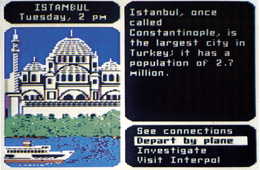
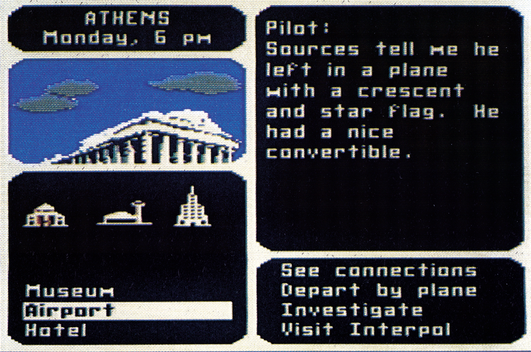

Kriminelle Geographie
Verbrecherjagd am Computer ist angesagt. Carmen Sandiegos Gang muß rund um den Erdball gejagt werden. Dabei wird spielerisch Geographie vermittelt. Ein Lernprogramm, das viel Spaß macht.


Hand aufs Herz: Könnten Sie aus dem Stegreif sagen, wo Rupien als Währung verwendet werden, welches Land einen Halbmond und einen Stern in der Flagge hat oder wie das gute alte Konstantinopel heute heißt? Tja, wenn Sie das nicht wissen und auch gar nicht wissen wollen, dann dürfen Sie niemals »Where in the World is Carmen Sandiego% spielen. Denn ohne Geographiekenntnisse ist die Verbrecherjagd sinn- und zwecklos — oder Sie stellen sich der Herausforderung und lernen beim Spielen viel Wissenswertes über unsere Erde, deren Staaten und Hauptstädte, die Sehenswürdigkeiten und Währungen, die Flora und Fauna und nicht zuletzt die Menschen.
Die gefährlichsten Verbrecher der Welt
Carmen Sandiego, ehemalige Doppel-, Dreifach- und Vierfach-Agentin (Gerüchte sprechen davon, daß sie das Spionieren an den Nagel gehängt hatte, nachdem sie selber nicht mehr wußte, für welche Länder sie eigentlich arbeitete) hat die Verbrecherorganisation V.I.L.E. gegründet. Inklusive Carmen hat diese zehn der gefährlichsten Verbrecher als Mit-: glieder: Dazu gehören beispielsweise »Dazzle« Annie Nonker, die die härteste Yoghurt-Bar jenseits des Suez betreibt, und Len »Red« Bulk, der Welt korruptester Profi-Hockey-Spieler (bis er erwischt wurde, wie er sich selber zu bestechen versuchte und international gesperrt wurde).
V.ILL.E. hat es sich zur Aufgabe gemacht, alle möglichen Kunstschätze der Welt zu rauben. Die Diebstähle gelingen ihnen auch immer fehlerlos doch bei der Flucht haben sie Schwierigkeiten. So können Sie, der neue Mann bei Interpol, nach jedem Verbrechen die Fährte der Täter aufnehmen und diese rund um den Globus verfolgen.
Am Ort des Geschehens angelangt, müssen Sie aus Zeugenaussagen rekonstruieren, wohin der Täter geflüchtet sein kann. Erfahren Sie etwa in einer Pariser Bank, daß der Verdächtige all sein Geld in britische Pfund getauscht hat, sollte man rasch den nächsten Flug nach London besteigen. Dort erhält man beispielsweise die Angabe, daß der Täter sich für Königs-Cobras interessierte. Wohin geht es jetzt?
Aber bevor Sie den Täter dingfest machen können, müssen Sie seine (oder ihre) Identität herausfinden. Nur dann kann der Haftbefehl ausgestellt werden, mit dem Sie den Täter für gewisse Zeit hinter Gitter bringen können. Zum Glück erinnern sich die Zeugen nicht nur daran, was der Täter gemacht hat, sondern auch an gewisse Eigenschaften, die ihn identifizieren könnten. Haben Sie genügend besondere Merkmale zusammen, ist der Interpol-Computer in der Lage, den Täter eindeutig zu bestimmen und den Haftbefehl auszustellen. Findet man den Täter, ohne einen Haftbefehl zu besitzen, darf dieser ungehindert weiterziehen.
Gewichtige Beilage
Glücklicherweise wird man bei diesen komplizierten Indizien nicht alleine gelassen. In Amerika erscheint jedes Jahr der »World Almanac«, ein über 900 Seiten starkes Paperback, das so ziemlich alle Informationen über unsere Erde aufgelistet hat. In diesem Buch sind alle Angaben versteckt, um die Täter innerhalb des gesteckten Zeitlimits zu finden. Dem Programm liegt nun umsonst die aktuelle Ausgabe dieses Buchs bei.
Auch sonst ist die Präsentation des Programmes nur mit exzellent zu bezeichnen. Jede der 30 Städte hat mindestens ein hervorragendes Grafikbild, die einzelnen Beschreibungen lesen sich hervorragend und das Handbuch gehört zu den besten seiner Art. Alleine die Seiten, die die einzelnen V.LL.E-Mitglieder vorstellen, sind eine ausgiebige Lektüre wert. Das ganze Programm wird mit drei Tasten oder dem Joystick bedient, alle Funktionen werden über Menüs abgewickelt.
Carmen Sandiego ist nicht nur ein tolles und spannendes Kriminal-Spiel, es ist auch ein Lernprogramm erster Güte. Als allererstes lernt man, mit einem Lexikon, wie dem World Almanac, korrekt umzugehen, um schnell an Informationen zu gelangen. Dann wartet natürlich eine Flut von verschiedenen Daten auf den Spieler von denen man sich unweigerlich einige merkt. Die Programmierer geben an, zuden 30imSpiel vorhandenen Städten über 1000 unterschiedliche Hinweise zusammengetragen zu haben. Für einen jedesmal unterschiedlichen Spielverlauf dürfte also gesorgt sein.
Und dann wartet auf den deutschen Spieler auch eine besondere Herausforderung: Programm, Handbuch und der World Almanac sind komplett in Englisch verfaßt. Da Carmen Sandiego aber gerade auf junge Computer-Spieler zurechtgeschnitten ist, werden nur einfache Worte und Sätze verwendet. Das Spiel sollte also für jemanden mit leichten Englisch-Kenntnissen verständlich sein. Hier kann Carmen Sandiego nochals Anlaß dienen, das eine oder andere Wort im Wörterbuch nachzuschlagen. So können Sie sogar Ihre Fremdsprachenkenntnisse auffrischen.
Sehr selten schafft es eine Software-Firma, ein Lernprogramm herauszubringen, das wirklich Spaß macht und nicht stur Inhalte vermittelt, sondern zur aktiven Mitarbeit aufruft. Der Tester, der inzwischen schon zwanzig Jahre alt ist und somit eigentlich gar nicht mehr zur Zielgruppe von Carmen Sandiego gehört, ließ sogar während der Arbeitszeit nicht mehr die Finger von dem Programm. Nicht umsonst räumte die etwa ein Jahr alte Apple-Version von Carmen Sandiego gleich mehrere Software-Auszeichnungen ab, darunter den Preis für das beste Lernprogramm des Jahres 1985 und einen Sonderpreis für herausragendes Design.
Auch wenn Carmen Sandiego ein Produkt ist, das aufgrund der Sprachbarriere nicht allzu großen Erfolg in Deutschland haben wird, zeigt es doch zumindest eine Richtung auf, in die Hersteller von Lernsoftware und Lernspielen gehen sollten. Daß man Geographie packend, spannend und spielerisch vermitteln kann, wurde mit Carmen Sandiego bewiesen. Nun sind gerade die deutschen Produzenten aufgerufen, ähnliche Produkte für andere Wissensgebiete zu schaffen.
(bs)Broderbund Software 17 Paul Drive, San Rafael, California 94903, USA